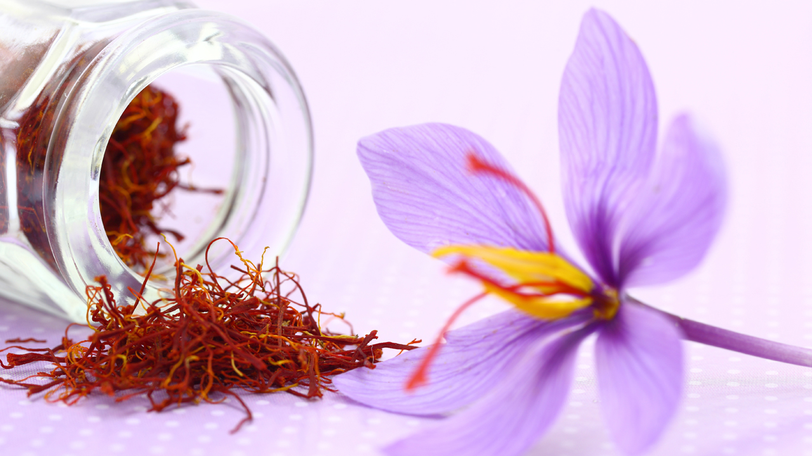

Azafrán, la especia más valiosa de la cocina
Enterate qué es y de qué manera lo usan los que saben
Si en un góndola del supermercado, ves un dedal de azafrán y te parece accesible, sospechá. Porque el azafrán es un producto caro que al productor se lo pagan alrededor de u$5000.- el kilo, según la calidad, pero que en el mercado puede llegar a costar unos u$11.000. No es casualidad que se lo conozca como “el oro rojo”, así que difícilmente se puede comprar este producto en cualquier lugar. El azafrán se hace a partir de los estambres de una flor llamada Crocus sativus, violeta, muy atractiva a la vista, cuyo nombre proviene de una tragedia narrada por Ovidio, en la que Crocus persiguió a la joven ninfa Smilax para enamorarla; finalmente los dioses transformaron al efebo en una llamativa flor con el objeto de atraer la atención de la bella. La etimología de la palabra azafrán deriva del árabe al-zafarán. Ya era muy apreciado en la antigüedad y se usaba como medicamento, colorante y condimento. Es sabido que en grandes cantidades resulta alucinógeno; el emperador Nerón, imitando a Zeus, dormía con la cabeza apoyada sobre una almohadilla de azafrán para gozar de sueños más interesantes. Los romanos solventes lo esparcían en su lecho de bodas, al punto que aún subiste el proverbio latino que reza “dormivit in sacco crocit” (he dormido en un lecho de azafrán). Los principales productores mundiales de esta especia son Irán, España, India y Grecia. En la Argentina existen algunos cultivos pioneros de azafrán, como el de Colonia Caroya, Córdoba, donde originalmente se sembraron 450.000 bulbos. El problema es que para llegar al kilo hacen falta unas ¡150.000 flores! También hay otros cultivos en el Valle de Pomán, Catamarca, y San Rafael, Mendoza. La calidad se mide por el tamaño de los estambres, y el color del mismo; por lo general, cuánto más rojo es, mejor calidad. Y el aroma debe intenso, aunque levemente metálico, casi amargo En la cocina el azafrán acompaña arroces, por supuesto, pero también forma parte de elaboradas salsas, caldos e incluso helados. Es, por su elevado precio, un producto muy fácil de adulterar, así que conviene asesorarse bien antes de comprarlo. Martín Rebaudino, titular de Roux, uno de los mejores bistrós porteños, recomienda guardarlo en un lugar seco y oscuro. “Yo uso hebras y lo muelo en un mortero, luego le incorporo agua o caldo frío y recién después va a la preparación. Si está húmedo lo seco cuidadosamente en una cuchara sobre la hornalla. Y me encanta usarlo en coulis y otras salsas”. Por su parte, Gustavo Cano, dueño de Dambleé Brasserie, cuenta que “donde más lo uso es en el arroz; apoyo las hebras en la tapa de la olla, que ya tiene cierta temperatura, y luego lo agrego a la cazuela con el caldo de la preparación. A mi me gusta usar el español, que a veces se lo compro a un importador de confianza o sino lo traigo en la valija cuando viajo”.